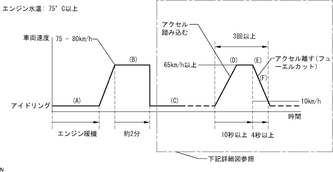

DTC P0606/63 ECU Internal Malfunction1 |
| DTC No. SAE/TCCS | DTC Detection Conditions 1. Diagnosis conditions 2. Malfunction status 3. Malfunction duration 4. Other | Inspection Area |
|---|---|---|
| P0606/63 |
|
|
)Reference| Step 1 | Read DTC |
Connect SST (TaSCAN) to DLC3.
Turn IG ON.
Check the DTCs by following the SST (TaSCAN) screen display.
| Result | Proceed to |
|---|---|
| Only DTC P0606/63 is output | A |
| DTCs other than DTC P0606/63 are also output | B |
|
| ||||
| A | |
| Step 2 | Read TaSCAN Data (A/F Sensor Voltage B1S1, A/F Sensor Voltage B2S1) |
Connect SST (TaSCAN) to DLC3.
Turn IG ON.
Turn the main switch of SST (TaSCAN) ON.
Start the engine, turn all accessory switches OFF, and warm up the engine until the engine coolant temperature stabilizes.
Depress the accelerator pedal and hold at 2500 r/min for approximately 3 minutes to warm up the air fuel ratio sensor.
Allow the engine to idle.
Following the SST (TaSCAN) screen display, read [ECU Data Monitor] - [A/F Sensor Voltage B1S1 / A/F Sensor Voltage B2S1], and check that the air fuel ratio sensor output voltage is normal (varies around 3.3 V).
Cancel the maintenance mode and move the shift position to "B".
Accelerate to 60 km/h and check that the output voltage of the air fuel ratio sensor rises (lean condition) when the accelerator pedal is released (during deceleration fuel cut).

|
| ||||
| OK | |
| Step 3 | Clear DTC |
Connect SST (TaSCAN) to DLC3.
Turn the IG ON and clear the DTCs following the SST (TaSCAN) screen display. (see)
| NEXT | |
| Step 4 | Perform Operation Check Drive |
Turn IG ON.
Turn the main switch of SST (TaSCAN) ON.
Start the engine, turn all accessory switches OFF, and warm up the engine until the engine coolant temperature stabilizes. (A)
Following the SST (TaSCAN) screen display, select [ECU Data Monitor] - [F/C at Idle ON].
Drive the vehicle at 75 to 80km/h for approximately 2 minutes. (B)
Move the shift position to 2 gear. (C)
Drive the vehicle at a speed suitable for fuel cut. (For details, see the hint below)(D)
Drive the vehicle with the accelerator pedal depressed at a speed of 65km/h or more for 10 seconds or more. (E)
Immediately after performing step (E), release the accelerator for 4 seconds or more to perform fuel cut. (Do not depress the brake pedal at this time)(F)
Decelerate the vehicle until it reaches 10km/h.
Repeat steps (C) through (E) 3 times or more.


| NEXT | |
| Step 5 | Read DTC |
Read the DTCs following the SST (TaSCAN) screen display. (see)
|
| ||||
| OK | ||
| ||